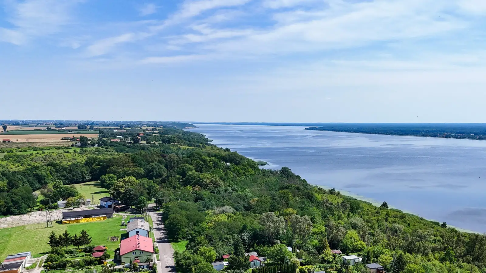
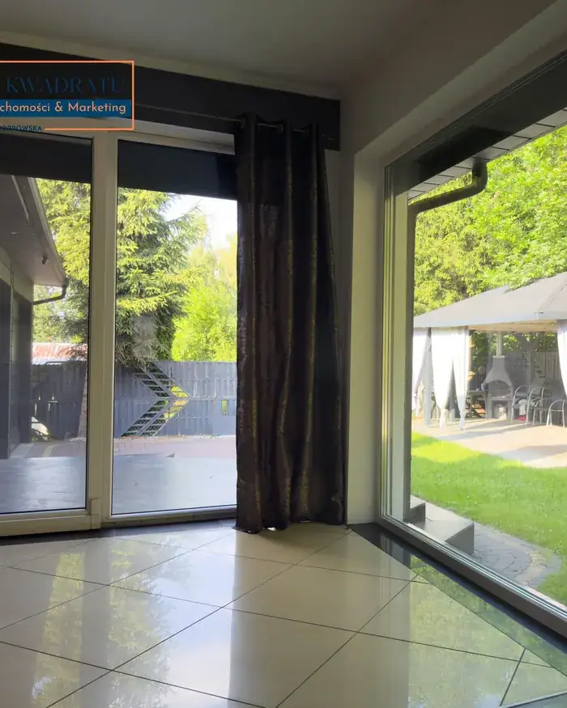
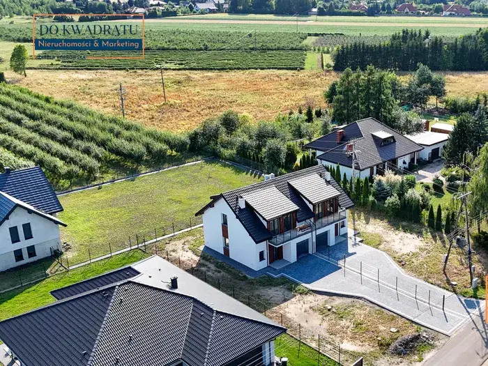

Bez prowizji
Krzyżówki, gm. Lipno
Energooszczędny dom na wzgórzu z widokiem na jezioro
899 000 zł5 pok. · 110 m2

Wycena, sesja zdjęciowa, ujęcia z drona, film i formalności u notariusza. Mieszkania, domy i działki we Włocławku i okolicach, od pierwszej rozmowy do aktu.
Umów bezpłatną analizę ceny Izabela Koprowska · licencja nr 31348Domy, mieszkania i działki we Włocławku i okolicy. Każda oferta z pełną sesją zdjęciową, a większość także z ujęciami z drona.
Oferty i ceny z obecnej strony (18.11.2026). Na docelowej stronie każda oferta ma własną podstronę.
Wybrane nieruchomości, które są już sprzedane, wynajęte albo zarezerwowane. Te same zdjęcia i ta sama staranność, z jaką przygotowuję każdą nową ofertę.
Statusy według oznaczeń ofert na obecnej stronie (18.11.2026).

Prowadzę przez cały proces, od A do Z: wycena, przygotowanie oferty, prezentacje, negocjacje i formalności u notariusza.
Mieszkania, domy i działki we Włocławku i w całym kujawsko-pomorskim. Zdjęcia, dron, opisy i dotarcie do właściwych kupujących, także gdy na co dzień mieszkasz poza regionem.
Dla właścicieli: oferta, weryfikacja najemców i umowa. Dla najemców: mieszkanie lub lokal w dogodnej lokalizacji, dopasowany do potrzeb.
Analiza rynku, selekcja ofert, negocjacje i bezpieczna finalizacja u notariusza. Kupujesz świadomie i bez ryzyka.
Stan prawny i księgi wieczyste, komplet dokumentów do aktu, terminy u notariusza, kontakt z doradcami kredytowymi i protokół przekazania.
Plan sprzedaży, kampanie, wizualizacje i sesje, prezentacje inwestycji i dni otwarte, obsługa zgodna z ustawą deweloperską.
Łączę dane, storytelling i nowoczesne narzędzia, żeby Twoja nieruchomość przyciągała właściwych kupujących i sprzedawała się lepiej. Oto, co dostaje każda oferta.

Pomagam mieszkańcom Włocławka i okolic sprzedawać, kupować i wynajmować nieruchomości, a przede wszystkim robić to skutecznie. Każda transakcja to dla mnie osobna historia: inne potrzeby i konkretny cel do osiągnięcia.
Od lat pracuję w marketingu i sprzedaży. Tę wiedzę wykorzystuję, żeby oferta przyciągała uwagę właściwych osób, a całą resztę - komunikację, negocjacje i umowy - biorę na siebie.
Kilka słów od osób, które sprzedawały, kupowały i wynajmowały ze mną.
Proces sprzedaży przeprowadzony wzorowo! Profesjonalizm na najwyższym poziomie, a co najważniejsze - skuteczność! Dom sprzedany w zaledwie kilka tygodni.Damian Msprzedaż domu
Polecam współpracę z Panią Izą - profesjonalna, rzetelna i zaangażowana osoba. Cały proces wynajmu przebiega sprawnie i bezstresowo, a kontakt jest zawsze szybki i klarowny.Agata Mwynajem
Zakup domu przeprowadzony na wysokim poziomie. Pani Iza zadbała o wszystkie szczegóły, prowadząc cały proces z dużą starannością.Daniel Szakup domu
10/10 :) Świetna współpraca z Panią Izabelą. Profesjonalna obsługa klienta. Formalności załatwione w ekspresowym terminie. Serdecznie polecam.Michał H
Z czystym sumieniem mogę polecić Panią Izabelę, profesjonalizm i zaangażowanie na najwyższym poziomie. Kolejne mieszkanie na pewno będę sprzedawał za pośrednictwem pani Izabeli!crocking97
Pani Iza jest osobą, którą będę polecać każdemu, kto poszukuje pośrednika nieruchomości. Sprawność i dokładność działania przerosła moje oczekiwania.Sandra M
Nie ma tu Twojego pytania? Zadzwoń albo napisz, odpowiem tego samego dnia roboczego.
Zwykle od kilku tygodni do kilku miesięcy, zależnie od lokalizacji, wyceny i jakości przygotowania oferty. Dobrze zaplanowany marketing - wideo, dron, opis i kampanie - zwykle skraca ten czas i podnosi cenę.
Biorę pełną odpowiedzialność za wynik i inwestuję w marketing premium: sesję, pionowe wideo, drona, reklamy i remarketing. Masz jeden kontakt, spójny proces i mniej chaosu, a to realnie działa na cenę i tempo.
Podstawą jest dokument potwierdzający prawo własności, wypis z księgi wieczystej i zaświadczenie o niezaleganiu z opłatami, a dalej dokumenty zależne od rodzaju nieruchomości. Kompletuję je razem z Tobą, od A do Z.
Nie. Organizuję i prowadzę prezentacje sama, dbając o to, żeby nieruchomość była dobrze pokazana kupującym.